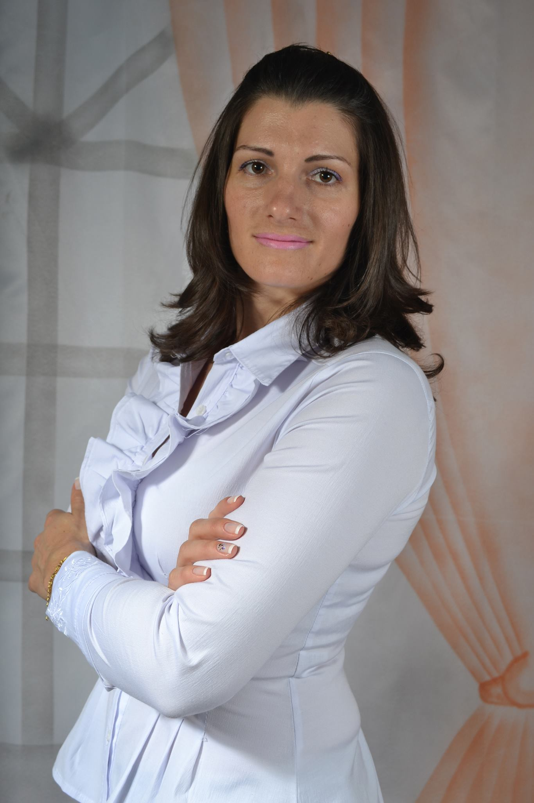

Roselei Brancher

Contato
Rua Dileta Zanatta Meneguini, 235E - Centro - Chapecó/SC

rosebr3107@gmail.com
www.curriculo-online/Roselei-Brancher.com.br
https://www.linkedin.com/in/roselei-brancher-a11b16a8/

+55 (49) 9 9907-5581

Sobre Mim
Sou uma desenvolvedora Front-end. Tenho conhecimento em HTML, CSS, JAVASCRIPT, WORDPRESS E PHP. Além do
conhecimento técnico nessas tecnologias já desenvolvi diversos projetos práticos com elas.
Experiências de Trabalho
Freelancer | Julho 2022 - Atual
Realizo projetos utilizando HTML, CSS, JAVASCRIPT, WORDPRESS e PHP. Criação de Websites responsivos,
criação de Sistemas Web, criação de Landingpages...
Professora de Tecnologia | FCEE 2012 à 2021
Orientar e ensinar alunos com as mais diversas e variadas tecnologias existentes;
Orientar e ensinas para pessoa cega e baixa visão, pessoas com deficiências múltiplas físicas e
psíquicas com o uso das tecnologias adaptadas para elas.
Histórico Acadêmico
Formação Programação do Zero - Rodolfo Mori | Abril 2022 | Novembro 2022 | Contínuo
O DevClub é uma formação Full Stack completo do zero ao avançado. Dentro dessa formação obtive
conhecimento em tecnologias tais como:
HTML, CSS, JavaScript, Wordpress e PHP...
Além do conhecimento teórico, realizei diversos projetos prático...
Faculdade UNIGRAN | Tecnologia em Análise e Desenvolvimento de Sistemas | Março/2008 - Dezembro/2012
Ótimas notas Ênfase em Tecnologias Diversas
Envolvemos várias empresas de tecnologia e otimizar seu processo de criação de produtos
CURSOS EXTRAS CURRICULARES
Dev Club - Rodolfo Mori
Programação do Zero: HTML, CSS, JAVASCRIPT
Danki Code - Guilherme Grillo
Full Stack, Wordpress e PHP